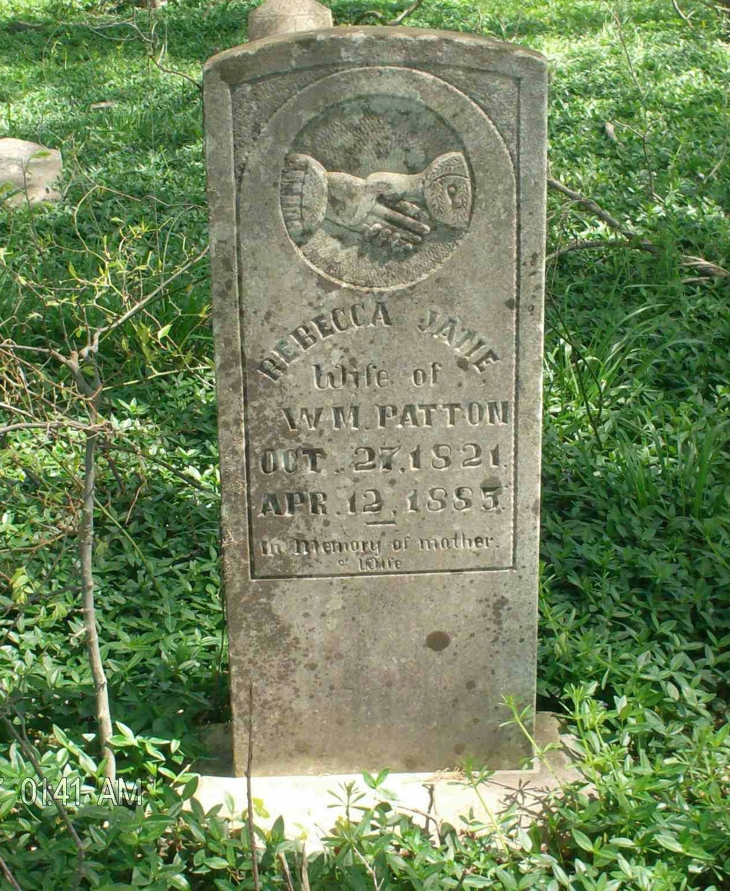
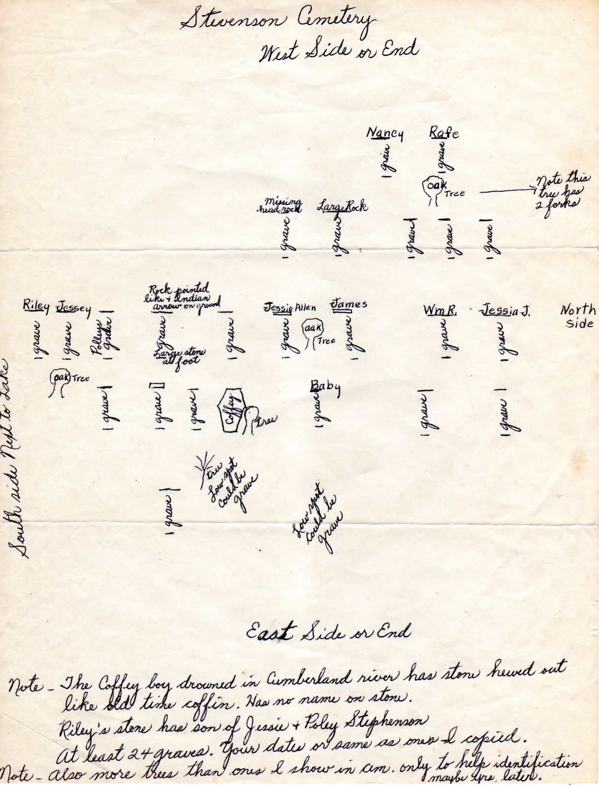
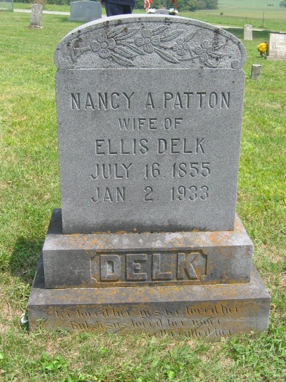
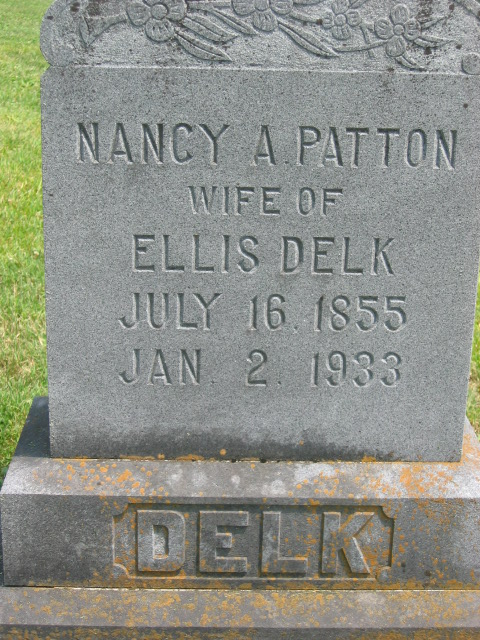
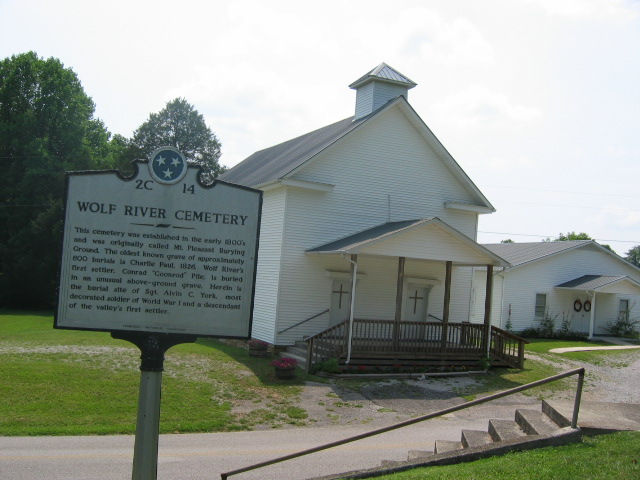
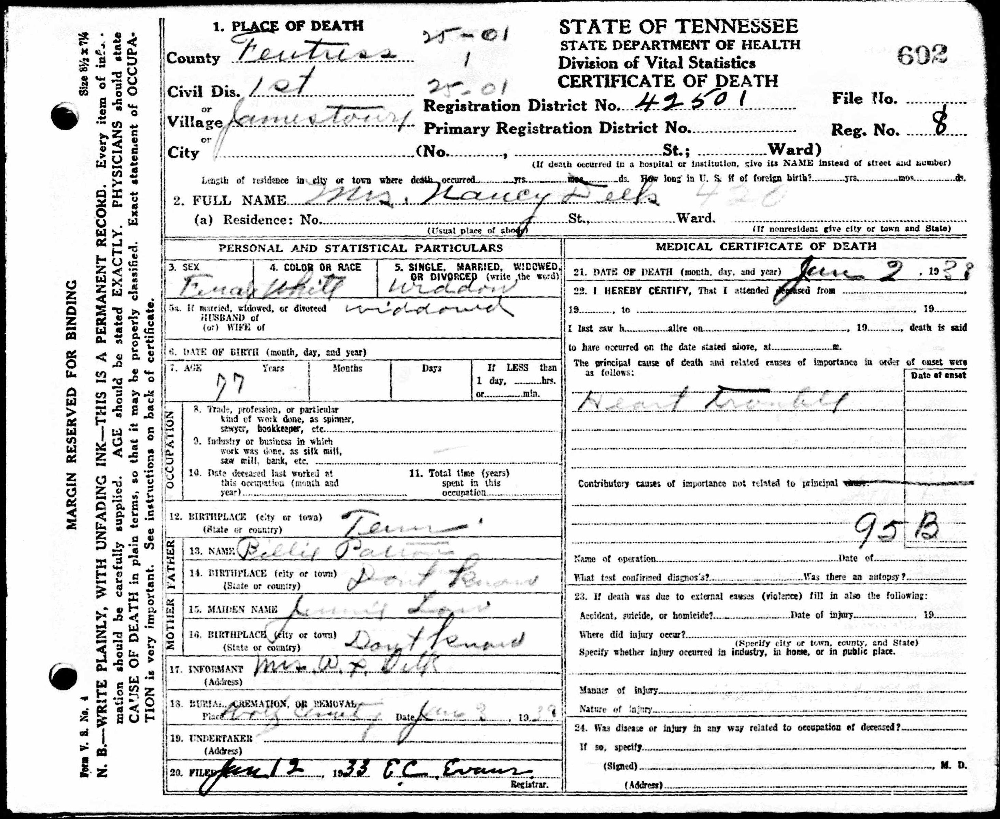
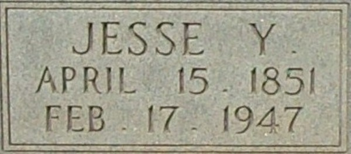
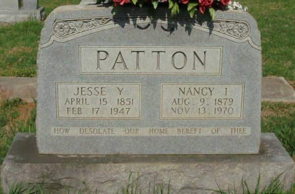
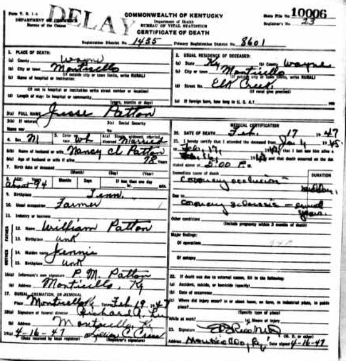
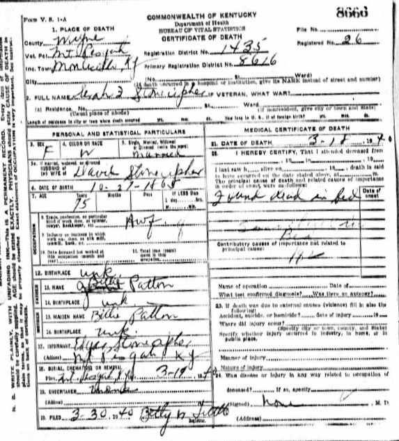

Patton line · Bledsoe, Cumberland and Fentress Counties, Tennessee, and Wayne County, Kentucky
Profile status: SUPPORTED
Quick Facts
Born
About 1828, North Carolina SUPPORTED (the 1850 census gives age 22 and the 1860 census age 31; Find a Grave gives Orange County — contributor-supplied, not adopted as proved)
Died
16 June 1915, Forbus, Fentress County, Tennessee DOCUMENTED (Tennessee death certificate, Vol. 16, Rec. 31; pneumonia fever; attended June 11–16, last saw alive June 12; parents, birthplace, informant, burial and undertaker fields blank)
Married
Lucy Brown, about 1846 UNPROVED (no marriage record survives; Bledsoe County early records were lost in the 1909 courthouse fire)
Second marriage
Rebecca Jane Scott, about 1850–51 UNPROVED (no marriage record; she died 12 April 1885, Giles Parmley Cemetery, Wayne County, Kentucky — stone)
Occupation
Farmer and labourer SUPPORTED (1850 census: labourer; 1860 and 1880: farmer; 1870: labourer on farm)
Military
Wagoner, Company K, 30th Kentucky Volunteer Mounted Infantry (Union) DOCUMENTED (VA pension payment card, Certificate No. 481251, Army Invalid; pension from 4 November 1907)
Buried
Wolf River Cemetery, Pall Mall, Fentress County, Tennessee SUPPORTED (Find a Grave memorial 195812304; the death certificate's burial field is blank)
William's link to Hymelus × Nancy is supported, not proved: no primary record names him as their son. The link rests on the 1850 Bledsoe census household, the 1987 Fentress County history's "oldest son," and his daughter Mary Catherine's sworn statement naming him as her father. His death certificate's parents fields are blank. Their tree profiles are linked.
Spouse
Lucy Brown (about 1830–26 January 1847), married about 1846 UNPROVED Rebecca Jane Scott (27 October 1821–12 April 1885), married about 1850–51 UNPROVED
Lucy was his first wife and the mother of Mary Catherine, his only child by her. After Lucy's death he married Rebecca Jane Scott, the mother of his other four children. Neither marriage has a surviving record.
Five children: Mary Catherine by Lucy; the other four by Rebecca Jane. Rafe and Andrew Ralph are one person — Find a Grave and the censuses give "Andrew Ralph 'Rafe' Patton"; Geni lists them as separate children, a duplicate not merged. Jesse's birth is a three-way conflict: 15 April 1851 (family history, Find a Grave, his stone) against 15 April 1858 (FamilySearch tree, supported by the 1860 census age 2) against "about 94" at death in 1947 on the Kentucky certificate (implying about 1852–53); the certificate gives no birth date and names his mother "Jennie," not Rebecca Jane Scott. Nancy Ann's death certificate likewise names her mother "Jenny Scott." Sarah Margaret's birth year is also unsettled: about 1857 in the research notes, 1860 on Find a Grave, 1862 on FamilySearch, and 27 October 1865 on her Kentucky death certificate (age 75). No twins among the five.
Siblings
Mary Ann Patton (born 1826) Alexander McKinley Patton (born 1831) Jesse Young Patton (born 1834) Sarah Frances Patton (born 1836)
Four siblings of William, children of Hymelus Patton × Nancy Woods, from the family account and Geni; the 1850 Bledsoe household shows Mary, William, Alexander, and Jesse Y. — Sarah Frances is not in that household. Geni also lists a duplicate William and a duplicate Alexander — duplicates, not separate people. William's brother Jesse Young (born 1834) is a different man from William's son Jesse Young — uncle and nephew share the name. None of the four has a verified tree profile linked here.
About 1828 · age 0 Born, North Carolina SUPPORTED (the 1850 census gives age 22; the 1860 census age 31)
About 1846 · age 18 Married Lucy Brown UNPROVED
12 January 1847 · age 19 Daughter Mary Catherine born, Sequatchie Valley DOCUMENTED (her sworn statement; her birth year is contested — see Research Notes)
26 January 1847 · age 19 Lucy Brown died, two weeks after Mary Catherine's birth SUPPORTED (her daughter's sworn statement)
24 October 1850 · age 22 Enumerated in his father's household, Bledsoe County, Tennessee — Hymelus 45, Nancy 44, Mary 24, William 22, Alexander, Jesse Y. 16 DOCUMENTED (no relationship column — co-residence only)
About 1850–51 · age 22–23 Married Rebecca Jane Scott UNPROVED
June 1860 · age 32 Enumerated at Cumberland County, Tennessee — farmer, with Jane and three children DOCUMENTED (dwelling 208, family 211)
20 July 1870 · age 42 Enumerated at Fentress County, Tennessee — labourer, with Jane and five children DOCUMENTED (household 84; the image age reads 42 against the index's 52)
June 1880 · age 52 Enumerated at Wayne County, Kentucky — farmer, with Jane and three children at home DOCUMENTED (sheet 556B; the index gives his age as 57)
4 November 1907 · age 79 Union pension begins, Certificate No. 481251 DOCUMENTED
16 June 1915 · age 87 Died, Forbus, Fentress County, Tennessee DOCUMENTED
Buried Wolf River Cemetery, Pall Mall SUPPORTED
Life Story
William "Bill" Patton was born about 1828 in North Carolina, the son of Hymelus Patton and Nancy Woods — a link carried as supported, not proved: no primary record names him as their son, and the claim rests on the 1850 Bledsoe County census household, where he appears aged 22 among Hymelus and Nancy's family, and on the Fentress County family history that calls him their oldest son. He grew up in the Upper Sequatchie Valley, where his parents had moved from Orange County, North Carolina, between 1835 and 1840. About 1846 he married Lucy Brown, daughter of David and Polly Brown of Bledsoe County. Their daughter Mary Catherine was born on 12 January 1847, and Lucy died two weeks later, on 26 January 1847. Mary Catherine was raised by her mother's family.
About 1850–51 William married Rebecca Jane Scott. They raised four more children — Andrew Ralph "Rafe," Nancy Ann, Jesse Young, and Sarah Margaret — and the censuses trace the family from Cumberland County in 1860 to Fentress County in 1870 and Wayne County, Kentucky, in 1880. After the Civil War they settled in Fentress County, in the Wolf River and Forbus areas. William farmed and laboured; the 1850 census calls him a labourer, the 1860 and 1880 censuses a farmer.
William served in the Union Army as a wagoner in Company K, 30th Kentucky Volunteer Mounted Infantry — a service now documented by his VA pension payment card (Certificate No. 481251, Army Invalid), which paid him from 4 November 1907. The family account that he enlisted in September 1861 with his father in Company D, 2nd Tennessee, is not supported by the card. He was widowed a second time when Rebecca Jane died on 12 April 1885. He died of pneumonia fever on 16 June 1915 at Forbus, aged about eighty-seven, and was buried at Wolf River Cemetery, Pall Mall. The 1987 Fentress County history's 1919 death year is contradicted by the death certificate.
Photo Gallery

Rebecca Jane Scott Patton's gravestone, Giles Parmley Cemetery, Wayne County, Kentucky — "Rebecca Jane, wife of Wm. Patton, Oct. 27, 1821 – Apr. 12, 1885."
Rafe and Nancy Patton's double gravestone, close-up — "Rafe Patton, July 16, 1853 – Nov. 6, 1896" and "Nancy Patton, Nov. 10, 1852 – May 10, 1939."

Handwritten diagram of the Stevenson Cemetery, showing Rafe and Nancy Patton's graves.

Nancy Ann Patton Delk's gravestone, Wolf River Cemetery, Pall Mall.

Nancy Ann Patton Delk's gravestone, close-up — "Nancy A. Patton, wife of Ellis Delk, July 16, 1855 – Jan. 2, 1933."

Wolf River Cemetery historical marker, Pall Mall.

Nancy Ann Patton Delk's Tennessee death certificate, 1933.Jesse Young Patton as a young man.

Jesse Young Patton's gravestone, close-up — "Jesse Y., April 15, 1851 – Feb. 17, 1947."

Jesse Young Patton and Nancy Ida Patton's double gravestone, Elk Spring Cemetery, Monticello, Kentucky.

Jesse Young Patton's Kentucky death certificate, 1947.

Sara Margaret Patton Stonecipher's Kentucky death certificate, 1940.
Sources and Evidence
Tennessee death certificate, Fentress County, Vol. 16, Rec. 31 (FamilySearch record NS6N-C55; image S3HT-D1Q3-TG3, image 33 of 59), read directly: died 16 June 1915, Forbus; attended June 11–16, last saw alive June 12, 3 p.m.; cause pneumonia fever; parents, birthplace, informant, burial and undertaker fields blank DOCUMENTED
VA pension payment card, "Pattent, William," Certificate No. 481251 (FamilySearch record QJDQ-QM76; image 939K-FC9D-TJ, image 718 of 722), read directly: Army Invalid; Wagoner, Company K, 30th Kentucky Volunteer Mounted Infantry; reissue rate 20 from 4 November 1907, rate 24 from 10 June 1912; died 16 June 1915; reimbursement order 2/10/16 payable to Nancy Ann Delk DOCUMENTED
1850 United States census, Bledsoe County, Tennessee, dwelling/family 673 (NARA M432, reel 870, pp. 96–97; enumerated 24 October 1850): Hymelus Patton 45, Nancy 44, Mary 24, William 22, Alexander 21-or-26, Jesse Y. 16; all born North Carolina DOCUMENTED (read directly; no relationship column — co-residence only)
1860 United States census, Cumberland County, Tennessee, dwelling 208, family 211 (enumerated June 1860): William Patton 31, farmer; Jane 32; Ralph 7; Nancy 6; Jessee 2 DOCUMENTED (read directly)
1870 United States census, Fentress County, Tennessee, household 84 (enumerated 20 July 1870): Wm Patten, labourer; Jane 45; Mary Jane 19; Rafe 18; Nancy 14; Mary 14; Sarah 8 DOCUMENTED (read directly; the image age reads 42 against the index's 52)
1880 United States census, Wayne County, Kentucky, Magisterial District 4, sheet 556B (enumerated June 1880): William Patton 57, farmer; Jane 56; Mary J. 32; Jesse 22; Sarah M. 17 DOCUMENTED (read directly for William, Jane and Mary J.; Jesse's and Sarah's rows fall on the next page and are index-level only)
Mary Catherine Brewster's sworn Eastern Cherokee application No. 43484 (NARA M1104, Reel 332; NAID 56895023), 9 September 1907: names father William Patton and mother Lucy Brown DOCUMENTED (the application was rejected on procedure alone, nine days past the deadline)
Find a Grave memorial 195812304: "William 'Billy' Patton," born 1828, Orange County, North Carolina; died 16 June 1915, Fentress County; burial Wolf River Cemetery, Pall Mall; spouse Rebecca Jane Scott Patton; children Jesse Young, Andrew Ralph "Rafe," Nancy Ann, Sara Margaret SUPPORTED (the Orange County birthplace is contributor-supplied; the memorial was read live in this pass, and its two photographs — a portrait of William in old age and the death-certificate image — were pulled in full)
History of Fentress County, Tennessee (Fentress County Historical Society, 1987), Patton excerpts, transcribed by Michael Allen (TNGenWeb): Hymelus and Nancy (Woods) Patton moved from Orange County, North Carolina, to the Upper Sequatchie Valley between 1835 and 1840; William their "oldest son"; William and Rebecca Jane moved to Fentress County after the Civil War FAMILY ACCOUNT (the 1987 history is mainly family tradition with little documentation, per the transcriber; its 1919 death year for William is contradicted by the death certificate)
House Report 118, 43rd Congress, 1st Session, 13 February 1874, read directly: Hemelion Patton, private, Company G, 2nd Regiment Tennessee Volunteers, enrolled 11 October 1861, died 10 August 1862 of disease contracted in service; widow Nancy applied 12 November 1867, pension from 25 May 1868 DOCUMENTED (his father's service)
Kentucky death certificate, Jesse Patton, 1947 (State File No. 10006; FamilySearch record N96W-GJC), read directly: died 17 February 1947, Monticello, Wayne County; age "about 94"; birth date blank; father William Patton; mother "Jennie" DOCUMENTED (the "Jennie" reading conflicts with Rebecca Jane Scott)
Geni profiles, click-verified 6 November 2026: William, Lucy, Hymelus, Nancy Woods, David W. Brown, Mary "Polly" Brown, Mary Catherine, and the four children by Rebecca Jane SUPPORTED
Find a Grave memorials for the four children by Rebecca Jane, read live 6 November 2026: Andrew Ralph "Rafe" Patton 173246929 (16 July 1853 – 6 November 1896, Patton-Stephenson Cemetery, Nancy, Kentucky); Nancy Ann Patton Delk 7758168 (16 July 1855 – 2 January 1933, Wolf River Cemetery); Sara Margaret Patton Stonecipher 69831168 (27 October 1860 – 17 March 1940, Giles Parmley Cemetery); Jesse Young Patton 48256543 (15 April 1851 – 17 February 1947, Elk Spring Cemetery) — their stones and memorial photographs were pulled in full SUPPORTED
Tennessee death certificate, Nancy Delk, 1933 (File No. 692): died 2 January 1933, Jamestown, Fentress County, aged 77, widowed, husband Ellis Delk, father Billy Patton, mother "Jenny Scott," burial Wolf River Cemetery; Kentucky death certificate, Sarah J. Stonecipher, 1940 (File No. 8666): died 17 March 1940, Wayne County, "found dead in bed," burial Mt. Pleasant, birth given as 27 October 1865, age 75 DOCUMENTED
Grades: DOCUMENTED an original record says it · SUPPORTED several records point to it · FAMILY ACCOUNT the family's own telling · UNPROVED a lead, not proved.
Research Notes and Open Questions
Birth year: about 1828 by the 1850 (22) and 1860 (31) censuses; the 1870 image reads 42 and the 1880 index 57 — census ages wobble. Find a Grave gives Orange County, North Carolina, as the birthplace; that is contributor-supplied. The page uses about 1828.
Death: 16 June 1915 is documented three ways — the death certificate, the pension card, and Find a Grave. The 1919 year in the 1987 Fentress history is contradicted, likely a conflation with Owen William Patton, died 21 November 1919, a different Cumberland County branch. FamilySearch's tree still carries 1919.
Parentage: Hymelus × Nancy is supported, not proved. No parent-naming primary record has been found; the 1850 census has no relationship column, and the death certificate's parents fields are blank. The link rests on the 1850 household, the 1987 history's "oldest son," and Mary Catherine's sworn statement naming William as her father.
Military: the pension card documents William as a wagoner in Company K, 30th Kentucky Volunteer Mounted Infantry (Union), Certificate No. 481251, pension from 4 November 1907. The family-history account that he enlisted in September 1861 with his father in Company D, 2nd Tennessee, is not supported by the card. He does not appear on the 1890 Union veterans schedule for Fentress, Pickett, and Clay Counties (negative, logged October 2026).
Marriages: no record survives for either marriage — Bledsoe County early records were lost in the 1909 courthouse fire, and Cumberland County's pre-1905 records are lost. Both marriages are carried at about 1846 and about 1850–51 on family tradition.
Children: five — Mary Catherine by Lucy; Andrew Ralph "Rafe," Nancy Ann, Jesse Young, and Sarah Margaret by Rebecca Jane. Rafe and Andrew Ralph are one person (Find a Grave and the censuses); Geni lists them as separate children — a duplicate, not merged. Rafe's stone gives 16 July 1853 – 6 November 1896, and Nancy Ann's stone gives 16 July 1855 – 2 January 1933 — the two share a birthday, two years apart. Jesse's birth is a three-way conflict: 15 April 1851 (family history, Find a Grave, his stone) against 15 April 1858 (FamilySearch tree, supported by the 1860 census age 2) against "about 94" at death in 1947 on the Kentucky certificate (implying about 1852–53); the certificate gives no birth date. The certificate names his mother "Jennie," not Rebecca Jane Scott. Nancy Ann's death certificate likewise names her mother "Jenny Scott." Sarah Margaret's birth year is also unsettled: about 1857 in the research notes, 1860 on Find a Grave, 1862 on FamilySearch, and 27 October 1865 on her Kentucky death certificate (age 75).
The 1870 census lists a "Mary Jane 19" and a second "Mary 14" in William's household; their identities are unresolved. FamilySearch carries a separate Mary Catherine Patton (born 5 April 1852, died 23 December 1917) as Rebecca's daughter — a duplicate question for a ruling; no extra child is added here.
Mary Catherine's birth year is a three-way conflict — 1847 (her sworn statement), 1848 (her death certificate), January 1851 (the 1900 census) — carried on her own page; this page uses her sworn date.
Hymelus and Nancy: Hymelus served as a private in Company G, 2nd Tennessee Volunteers, enrolled 11 October 1861, died 10 August 1862 at Cumberland Gap (House Report 118, documented). The widows' pension file WC114217 belongs to his second wife, Nancy Hicks, not Nancy Woods. Nancy Woods's parents are unproved: Geni attaches Sampson Wood × Markey Chisenhall, while its About text names Matthew Woods × Peggy Faucette as unproved and not attached. Hymelus's own parents are unresolved. These questions belong to his own pass.
Cherokee ancestry: Hymelus "considered himself Cherokee" and William is "said to have been half Cherokee" by family tradition; no enrollment record has been found for either. The claims are unproved and rest on tradition alone.
Prison record: Jesse Patton, Tennessee State Penitentiary No. 1489 (received 25 November 1854, age 22, born Tennessee, died of consumption 7 January 1860), is NOT Jesse Young Patton — he would have been three years old in 1854 — and was not born in North Carolina. The record is not attached to this family.
1900 and 1910 censuses: William's household images for 1900 and 1910 were not found on FamilySearch under the searches tried; that is a failed search, not proof the records do not exist.
Photographs: the hero is a portrait of William in old age, pulled from his Find a Grave memorial; the young girl beside him is not identified. The gallery shows his second wife Rebecca Jane's gravestone and all twelve of the children's Find a Grave photographs — Rafe's and Nancy Ann's stones, Jesse's young portrait and stones, the Wolf River Cemetery marker, the Stevenson Cemetery diagram, and Nancy Ann's and Sara Margaret's death certificates. William's own death-certificate image is filed in the research folder and cited, not shown as a gallery picture.
Open pulls: Hymelus's pension file (Record Group 15, a paid step — noted, not pursued); the T288 pension index card for Hemelion Patton (not found in the searches tried); Bledsoe County deeds for David W. Brown; Scott County, Tennessee, marriages 1854–1880.
Profile history: Created 6 November 2026 from the family couple profile and research notes.